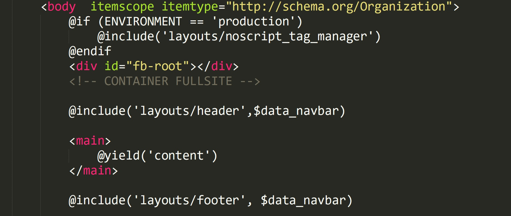
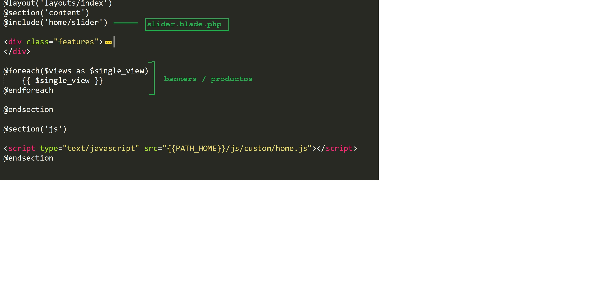
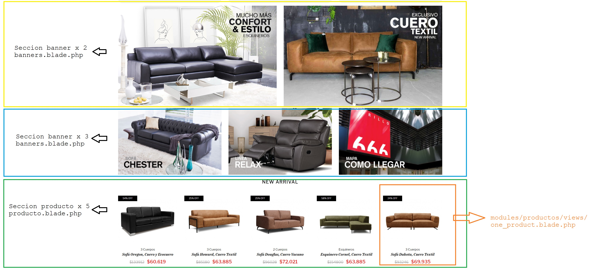
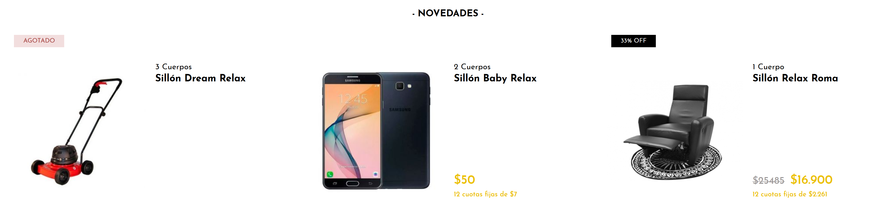

Guía de front-end para Simbel
Tabla de contenidos
Introducción
El proposito de este documento es proveer toda la información necesaria para una correcta instalación y customización de una tienda Simbel. Como consideración debemos tener en cuenta que esta guía solo contempla el desarrollo sobre frontend, por tanto no encontraremos aquí información sobre código backend, arquitectura y base de datos.
Stack
A continuación se detallan las principales tecnologías con las que trabaja actualmente la plataforma en un entorno productivo:
- Cloud Hosting: Linode
- OS: Debian 9
- Web Server: Apache 2.2
- PHP: 7.* (framework Codeigniter 3.0.0)
- Database: MariaDB 10.*
Instalación
Para instalar Simbel localmente debemos clonar el proyecto base "Simbel2.0" en el directorio raíz donde queremos ejecutarlo. Suponemos aquí que este directorio es el raíz de un servidor web instalado localmente con la infraestructura descripta ( LAMP ).
* En caso de no tener instalado el servidor web recomendamos utilizar la herramienta XAMPP que nos facilita toda esta estructura y es de fácil configuración para trabajar localmente.
Acceso al código
Al ser un repositorio privado, es necesario disponer de una cuenta registrada en Bitbucket y solicitar el permiso al mismo. Luego podrá clonar el repositorio:
git clone https://USER-BITBUCKET@bitbucket.org/ruca/portal-front.git
Configuración
Una vez clonado el proyecto, debería generarse la siguiente estructura de archivos:
.git
applications
public_html
.gitignore
README.md
A continuación entonces, procederemos a definir el ambiente en el que trabajaremos. Para ello creamos un archivo llamado config.env dentro de /applications.
Luego editamos este archivo y agregamos la siguiente línea :
testing
De esta manera la aplicación ya estaría lista y conectada a la base de datos de testing.
*Nota: para poder realizar modificaciones en el administrador vinculado a este storefront, deberá solicitar dicho acceso
Estructura general
En esta sección detallaremos como se compone el layout base de la tienda y luego se presentarán los templates de cada módulo en particular. A modo de resumen podríamos decir que el layout indica la estructura general ( header , main , footer, etc) y los templates serán las vistas particulares ( ficha del producto, resultados de búsqueda, etc)
Para editar el markup de las tiendas, en la mayoría de los casos vamos a necesitar trabajar en applications/frontend/modules. Dentro de esta carpeta hay carpetas dedicadas a cada uno de los módulos que componen las interfaces de los sitios. Por ejemplo, la carpeta applications/frontend/modules/home corresponde a la página Home del sitio y el html a editar lo encontramos dentro de /views .
Los archivos a editar veran que no tienen extension .html sino .blade.php ya que Blade PHP el sistema de plantillas utilizado para facilitar la lectura y estructuras de codigo PHP dentro del markup HTML.
Los recursos para alterar el DOM (css, js, etc.) están dentro de la carpeta /public_html/public y están detallados en la sección "Storefront guide".
Layouts
Los archivos que arman la estructura base del sitio podemos encontrarlos en
.git
applications
frontend
modules
layouts
views
system
...
public_html
.gitignore
README.md
Dentro de todas las vistas listadas en esta carpeta, tomaremos la principal "index.blade.php" . Todo otra vista se ejecutará siempre dentro de esta. En este archivo veremos, entre otras cosas, la declaración del documento, metadata, la carga de todos los JS/CSS y también la carga de las vistas según la ruta donde nos encontremos: 
Vemos que dentro del body carga en primer lugar el "header" ( que su vista se encuentra como se puede ver en la misma ruta, es decir /layouts/header.blade.php ). 
A su vez, vemos que header.blade.php incluye a la vista que despliega la barra de categorías (navbar)
Luego dentro del tag main se ejecutará el contenido dinámico "content" según la ruta donde nos encontremos. Por ejemplo si estuvieramos en el home del sitio, dentro de main se ejecutaría la vista applications/frontend/modules/home/views/index.blade.php. Por último se ejecuta el footer que al igual que el header tenemos su vista en el mismo directorio.
Templates
A continuación se detallan los módulos utilizados en el frontend, las rutas mediante las cuales se acceden (siempre y cuando no sea una "subvista", es decir, se embeba dentro de otra y por tanto no es accesible por URL) y también se especificará si contiene otra subvista. Como se vió en la sección anterior, todas las vistas que se veran a continuacion se ejecutarán dentro del tag main mediante la instrucción blade "@yield('content')".
HOME

Este modulo carga el contenido de la pagina principal. Como se ve, dentro de home/views/index.blade.php se carga inicialmente el slider principal, luego un bloque HTML "features" editable y a continuacion una estructura PHP que irá agregando bloques como tantas secciones de productos/banners se hayan creado en el administrador. Si es un bloque de productos invocara la vista productos.blade.php y en el caso de que sea una sección de banners cargará la vista banners.blade.php
De estas dos vistas, vemos que la de productos embebe a su vez una nueva vista ubicada en otro módulo /productos/views/one_product.blade.php . Este vista la veremos en detalle en el modulo de productos, pero es un template fundamental ya que se utiliza tanto se muestre un producto o más en una grilla (y también se utiliza en otros módulos como los resultados de búsqueda)
Storefront Guide
Tecnologías utilizadas UX / UI :
Edición Sass/CSS, JavaScript e imágenes
.git
applications
public_html
public
css
images
js
plugins
sass
...
...
.gitignore
README.md
Para editar los estilos, en los proyectos nuevos se debe trabajar sobre la carpeta sass. Allí se encuentran los archivos Sass que serán compilados automáticamente en un solo archivo CSS, que será guardado en la carpeta css.
Para que los archivos Sass se compilen, es necesario tener instalado en el equipo un cliente de Sass. Actualmente se utiliza Ruby Sass, pero no es recomendable pues esta deprecada. Si se elige esta opción, para compilar el Sass hay que abrir la línea de comandos, ubicarse en public_html/public y ejecutar sass --watch sass:css. Quedará corriendo un proceso que compilará los archivos automáticamente cada vez que los modifiquemos.
El framework
Desde mediados de 2017, las interfaces de las tiendas Simbel se realizan sobre un framework de desarrollo front-end creado especialmente para la plataforma e inspirado en Bootstrap, que era la herramienta que se aplicaba hasta entonces. El nuevo sistema busca proveer una solución más liviana y flexible, ajustada a las necesidades particulares de nuestras tiendas, y aprovechar las características más modernas de CSS (como Bootstrap 4) sin dejar de garantizar una buena compatibilidad con navegadores antiguos (como Bootstrap 3).
Las principales dependencias del framework son Sass, jQuery y algunos plugins de terceros, como Slick.
En este documento se utilizará como ejemplo el framework de Murillo 666.
Sistema de archivos
El framework está ubicado en la carpeta public. A continuación se detallan los archivos que lo componen:
.git
applications
public_html
public
css
styles.css: Es el archivo que contendrá todos los estilos del sitio (exceptuando, claro está, el carro). No debe modificarse, ya que se genera automáticamente al modificar los archivos Sass.
...
images
static: Aquí se guardan las imágenes que forman parte del diseño del sitio, como el logo, las fotos de las páginas institucionales, etc.
email: Aquí se guardan las imágenes que forman parte de los newsletters
icons: Aquí se guardan específicamente íconos, generalmente en formato SVG
...
js
custom
head.js: Scripts que se aplican al header (cabecera) del sitio
home.js: Scripts que se aplican a la home del sitio
list.js: Scripts que se aplican a las páginas de listado (conocidas internamente como Ficha 2) dentro del sitio
product.js: Scripts que se aplican a las páginas de producto (conocidas internamente como Ficha 3) dentro del sitio
scripts.js: Scripts que se aplican a todas las páginas. También incluye la asignación de las variables más importantes.
...
plugins
sass
base
_base.scss: Estructura básica (o boilerplate) del sitio. Incluye el sistema de grillas y la mayoría de los componentes y helpers de uso más común. La idea es que sea común a todos los sitios, así que no debe modificarse.
_mixins.scss: Mixins que aportan funciones útiles y permiten generar vendor prefixes en cuestión de segundos para garantizar una mejor compatibilidad cross-browser.
_variables.scss: Las variables básicas con sus valores por defecto. No debe modificarse.
normalize.scss: Un CSS reset que homogeneiza los diferentes estilos por defecto que aplican los navegadores.
_customVariables.scss: Las variables originales con los valores modificados por el desarrollador para adaptarse a las necesidades particulares del proyecto. También se pueden agregar variables propias. Estos valores sobrescriben los de _variables.scss.
styles.scss: Aquí es donde el desarrollador debe incluir los estilos que desee para adaptarse a las necesidades particulares del proyecto. Estos estilos pueden sobrescribir los de _base.scss.
...
...
.gitignore
README.md
Sistema de grilla
El sistema de grilla utiliza una nomenclatura similar a la de Bootstrap. Está construido mayormente en flexbox, pero también brinda fallbacks para navegadores que no soporten ese módulo.
Los valores por defecto de la grilla, como así también los breakpoints a los que haremos referencia de ahora en más, están explicados en el artículo Uso de grillas en diseño web. Es necesario leer este documento antes de seguir adelante.
Veamos un ejemplo: una grilla de cuatro columnas.
<div class="container">
<div class="global-grid grid-row">
<div class="grid grid-of-12">
<div class="grid-col col-3">grid-col col-3</div>
<div class="grid-col col-3">grid-col col-3</div>
<div class="grid-col col-3">grid-col col-3</div>
<div class="grid-col col-3">grid-col col-3</div>
<div class="grid-col col-3">grid-col col-3</div>
<div class="grid-col col-3">grid-col col-3</div>
<div class="grid-col col-3">grid-col col-3</div>
<div class="grid-col col-3">grid-col col-3</div>
</div>
</div>
</div>
El elemento que representa la grilla lleva una clase grid, además de una clase modificadora grid-of-N, donde N es la máxima cantidad de unidades que puede contener cada fila. En este caso, la grilla puede contener hasta 12 unidades por fila.
Cada columna lleva una clase grid-col, además de una clase modificadora col-I, donde I es la cantidad de unidades de ancho que ocupa. En este caso, son cuatro columnas que ocupan tres unidades.
El elemento grid debe tener como padre inmediato un elemento grid-row, que representa la fila. A su vez, el grid-row debe ser hijo (inmediato o no) de un elemento container.
Nótese que, a diferencia de lo que ocurre con la grilla de Bootstrap, si aquí queremos mostrar varias filas (en este caso, dos de cuatro columnas) podemos hacerlo utilizando un único elemento row.
La grilla también permite «empujar» columnas a la izquierda o a la derecha (offset), dejando un espacio vacío cuyo ancho será de la cantidad de unidades que le indiquemos:
<div class="container">
<div class="global-grid grid-row">
<div class="grid grid-of-12">
<div class="grid-col col-3">grid-col col-3</div>
<div class="grid-col col-3 pull-right-3">grid-col col-3 pull-right-3</div>
<div class="grid-col col-3 pull-left-3">grid-col col-3 pull-left-3</div>
<div class="grid-col col-3">grid-col col-3</div>
</div>
</div>
</div>
La grilla puede ser responsiva, apilando las columnas en resoluciones donde el ancho no permita mostrarlas una la lado de otra:
<div class="container">
<div class="global-grid grid-row">
<div class="grid grid-of-12">
<div class="grid-col col-3 col-medium-6 col-small-6 col-extra-small-12">grid-col col-3 col-medium-6 col-small-6 col-extra-small-12</div>
<div class="grid-col col-3 col-medium-6 col-small-6 col-extra-small-12">grid-col col-3 col-medium-6 col-small-6 col-extra-small-12</div>
<div class="grid-col col-3 col-medium-6 col-small-6 col-extra-small-12">grid-col col-3 col-medium-6 col-small-6 col-extra-small-12</div>
<div class="grid-col col-3 col-medium-6 col-small-6 col-extra-small-12">grid-col col-3 col-medium-6 col-small-6 col-extra-small-12</div>
</div>
</div>
</div>
Si se achica la ventana del navegador, podrá comprobarse que las columnas
- ocupan 3 unidades por defecto (col-3),
- ocupan 6 unidades en resolucíones de pantalla con 768px < ancho ≤ 1024px (col-medium-6),
- ocupan 6 unidades en resoluciones de pantalla con 480px < ancho ≤ 768px (col-small-6) y
- ocupan 12 unidades en resoluciones de pantalla con ancho ≤ 480px (col-extra-small-12).
Los offset de columnas también son responsivos:
<div class="container">
<div class="global-grid grid-row">
<div class="grid grid-of-12">
<div class="grid-col col-6">grid-col col-6>/div>
<div class="grid-col col-3 pull-right-3 col-medium-4 pull-right-medium-2 col-small-5 pull-right-small-1 col-extra-small-6 pull-right-extra-small-0">grid-col col-3 pull-right-3 col-medium-5 pull-right-medium-1>/div>
</div>
</div>
</div>
Si se achica la ventana del navegador, podrá comprobarse que la segunda columna
- ocupa 3 unidades (col-3) y tiene un offset de 3 unidades hacia la derecha (pull-right-3) por defecto,
- ocupa 4 unidades (col-medium-4) y tiene un offset de 2 unidades hacia la derecha (pull-right-medium-2) en resolucíones de pantalla con 768px < ancho ≤ 1024px,
- ocupa 5 unidades (col-small-5) y tiene un offset de 1 unidad hacia la derecha (pull-right-small-1) en resolucíones de pantalla con 480px < ancho ≤ 768px,
- ocupa 6 unidades (col-extra-small-6) y tiene un offset de 0 unidades hacia la derecha (pull-right-extra-small-0) en resolucíones de pantalla con ancho ≤ 480px.
Existen dos tipos de grillas: las globales y las de producto. Las grillas globales pueden aplicarse a la mayor parte del contenido (incluyendo el header y las páginas institucionales), mientras que las grillas de producto se utilizan específicamente para mostrar filas de entre uno y seis productos, y pueden tener márgenes y anchos personalizados.
Así, en la Home de Murillo 666 podríamos encontrar una grilla de productos como la que sigue:

<div class="container">
<div class="products-grid grid-row">
<div class="grid grid-of-3">
<li class="grid-col col-1">
<div class="product-card">
...
</div>
</li>
<li class="grid-col col-1">
<div class="product-card">
...
</div>
</li>
<li class="grid-col col-1">
<div class="product-card">
...
</div>
</li>
</div>
</div>
</div>
Hay algunas diferencias entre el markup de esta grilla y el de las anteriores:
- En vez de la clase global-grid, se usa la clase products-grid.
- En vez de la clase grid-of-12, se usa la clase grid-of-3. Esto implica que se trata de una grilla donde puede colocarse un máximo de tres unidades por fila.
Nótese que estas grillas no tienen aplicadas las clases para responsive que vimos en otros ejemplos. Esto se debe a que su comportamiento en dispositivos móviles es diferente, y se maneja por JavaScript.
Los estilos de cada grilla se aplican al momento de crearla, y esto se logra a través del mixin grid(), cuya implementación puede leerse en _base.scss. Este mixin crea las reglas CSS necesarias para estructurar la grilla, a partir de los siguientes argumentos:
- $columns: cantidad máxima de unidades por fila.
- $padding: espacio entre las columnas.
- $columnBreak (opcional): indica explícitamente a partir de qué columna insertar un salto de fila. Este argumento solo es necesario si queremos que las grillas se vean bien en navegadores que no soporten flexbox. Por ejemplo, si queremos garantizar que cada fila tenga un máximo de cuatro columnas, $columnBreak debe ser 4. Esta característica no es responsiva, pero esto no es problema dado que los navegadores que se ven afectados son únicamente de escritorio.
Veamos algunos ejemplos, tomados de _base.scss.
.global-grid {
@include grid(12, $container-padding * 2);
}
Crea una grilla de tipo global.
.products-grid {
@include grid(6, $container-padding * 2);
@include grid(6, $container-padding * 2);
@include grid(5, $container-padding * 2);
@include grid(3, $container-padding * 2);
@include grid(2, $container-padding * 2);
}
Crea grillas para mostrar dos, tres, cuatro, cinco y seis productos por fila.
Dado que, en general, los sitios nuevos se hacen sobre la base de sitios anteriores, que ya vienen con una estructura armada, rara vez es necesario crear grillas adicionales desde Sass.
Helpers
Visibilidad
Las siguientes clases hacen que un elemento sea invisible en ciertas resoluciones:
- hidden-large: oculta el elemento cuando la resolución de pantalla es menor o igual al breakpoint large (1200px).
- hidden-medium: oculta el elemento cuando la resolución de pantalla es menor o igual al breakpoint medium (1024px).
- hidden-small: oculta el elemento cuando la resolución de pantalla es menor o igual al breakpoint small (768px).
- hidden-extra-small: oculta el elemento cuando la resolución de pantalla es menor o igual al breakpoint extra-small (480px).
Las siguientes clases hacen que un elemento sea visible en ciertas resoluciones:
- visible-large: muestra el elemento cuando la resolución de pantalla es menor o igual al breakpoint large (1200px).
- visible-medium: muestra el elemento cuando la resolución de pantalla es menor o igual al breakpoint medium (1024px).
- visible-small: muestra el elemento cuando la resolución de pantalla es menor o igual al breakpoint small (768px).
- visible-extra-small: muestra el elemento cuando la resolución de pantalla es menor o igual al breakpoint extra-small (480px).
Nótese que estas clases suelen utilizarse especialmente en el header y la barra de navegación, ya que contienen elementos que pueden verse o no verse según la resolución.
Accesibilidad
La clase sr-only hace que cierto elemento sea invisible pero que su contenido sea legible para un software de lectura de pantalla, ayudando a los usuarios que sufran alguna discapacidad visual.
Componentes
Header
El header es uno de los componentes más complejos de la interfaz, debido a algunas características particulares:
- Tiene un buscador de productos, que muestra sugerencias a medida que el usuario ingresa su consulta.
- En resoluciones mobile, el buscador aparece inicialmente colapsado, y se despliega al hacer clic.
- Se reduce y se fija al tope de la pantalla cuando el usuario se desplaza hacia abajo.
- Su diseño varía mucho según la resolución de pantalla. Por ejemplo, en las resoluciones de escritorio la barra de navegación está debajo del header, mientras que en las resoluciones mobile pasa a estar dentro de él.
Para facilitar el manejo del header, en algunos proyectos (incluyendo Murillo 666) su funcionamiento se encapsuló en un plugin, dynamicHeader, que se invoca en applications/frontend/modules/views/index.blade.php. Deben proveérsele los siguientes argumentos:
- headerHeight: alto del header (en px) cuando el usuario todavía no hizo scroll. Tipo: numérico.
- mobileWidth: ancho de pantalla (en px) que se tomará como límite entre desktop y mobile. Tipo: numérico.
- shrinkCart: indica si al resumen del carro de compra que figura en el header debe aplicársele la clase cart-shrink en resoluciones mobile y cuando el usuario se desplaza hacia abajo, de manera que se muestre una vista más compacta. Tipo: booleano.
- speed: velocidad de transición (en ms) de la animación del buscador en resoluciones mobile. Tipo: numérico.
- responsive: un conjunto de media queries, compuestos por un breakpoint y un headerHeight, que indican qué alto de header aplicar a distintas resoluciones. Tipo: array de objetos.
Veamos un ejemplo:
$('#header-main').dynamicHeader({
headerHeight: 130,
mobileWidth: mediumMaxWidth,
shrinkCart: false,
speed: transitionDuration,
responsive: [
{
breakpoint: mediumMaxWidth,
headerHeight: 137
},
{
breakpoint: extraSmallMaxWidth,
headerHeight: 129
}]
});
En este caso, el header tiene inicialmente un alto de 130px. Se considera que una pantalla es mobile cuando su ancho es igual o menor a mediumMaxWidth (1024px). La clase shrink-cart no se aplicará al resumen del carro. La velocidad de la animación del buscador será igual a transitionDuration (200ms). En resoluciones con ancho menor o igual a mediumMaxWidth (1024px), el alto inicial del header será de 137px, y en resoluciones con ancho menor o igual a extraSmallMaxWidth (480px), el alto inicial del header será de 129px.
Recomendaciones
- No debiera ser necesario crear componentes desde cero. El framework ya viene con implementaciones propias de componentes como modales, desplegables, menús de navegación y scrollspy, entre otros.
- Si se va a modificar algún componente, ser cuidadoso a la hora de cambiar clases o ID (o directamente no cambiarlos), ya que probablemente estos se utilicen como selector en alguna función de JavaScript.
- Los nombres de clases, mixins, funciones y otros elementos del código están en inglés, que es el idioma convencional de la programación. Sería ideal no romper esa regla.
Buenas prácticas
- Seguir la guía de CSS de Airbnb.
- Seguir la guía de JavaScript de Airbnb.
- Usar el formato JSDoc para comentar el código JavaScript.